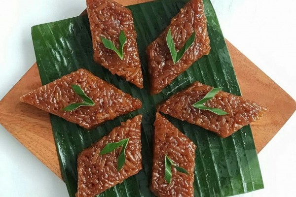

Wajik or wajid is a traditional Indonesian sticky rice cake originating from Java. It's usually made with a combination of glutinous rice, palm sugar, coconut milk, pandan leaves, and salt. The glutinous rice is soaked, washed, steamed, and cooked in a skillet with coconut milk until it's absorbed.
Meal prep time : 3 hours 15 minutes
Servings : 20